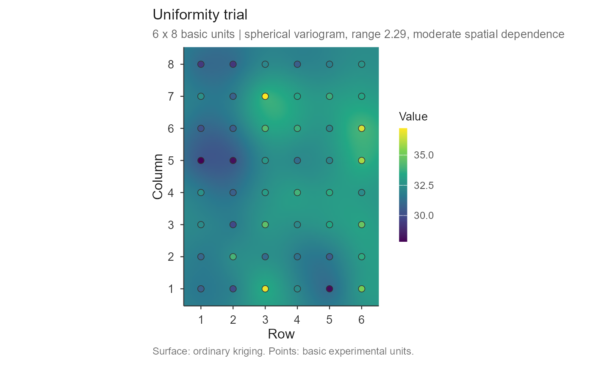

check_trial.RdInspects the raw grid of basic experimental units and reports what should be
settled before any plot-size method is run: whether the grid is complete and
usable, whether the values are sane, and whether the field has spatial
structure worth sizing plots against. The result carries a plot()
method drawing the field map.
check_trial(
.data,
value = NULL,
row_id = NULL,
col_id = NULL,
trial = NULL,
cell_size = c(1, 1),
n_bins = 15,
max_dist = NULL,
variogram = TRUE
)a matrix (one trial), a named list of matrices, or a long data frame with one row per basic unit.
name of the measurement column (long format).
names of the row and column index columns (long format).
optional column name identifying the trial.
numeric c(row, col): the distance between the centres
of adjacent basic units, in the units you want distances reported in.
Default c(1, 1).
number of distance classes for the empirical variogram.
largest separation used; NULL (default) takes half the
maximum distance in the field, the usual rule.
logical; fit the variogram (default TRUE). Turning it
off skips the only appreciable computation.
An object of class "trial_check": a list with checks
(one element per trial, each holding the dimensions, statistics, outliers,
trend, spatial measures, fitted variogram and any issues) and
summary, one row per trial.
Grid dimensions, missing cells, and how many rectangular plot shapes the grid admits. A grid whose sides are prime yields almost no shapes, which stops the CV-based methods before they start; the count is flagged when it falls below six.
Missing, negative, zero and constant values, and outliers by the boxplot rule. In a uniformity trial an outlying basic unit is usually a harvest failure or a typing error, and it contaminates every shape that contains it.
Means along rows and columns, with the p-value of a monotone trend. A gradient in one direction is field fertility, and it is why shapes of equal area but different orientation give different CVs.
Moran's I with its p-value, the first-order autocorrelations used by [calc_paranaiba()], and a fitted variogram.
The fitted model gives three numbers that bear directly on plot size. The range is the distance beyond which basic units stop being correlated: a plot larger than the range is averaging units that are already independent, which is the spatial reading of the plateau that [fit_lrp()] and [fit_qrp()] estimate empirically. The nugget-to-sill ratio is the share of variance with no spatial structure; following Cambardella et al. (1994) it is read as strong (below 0.25), moderate (0.25 to 0.75) or weak (above 0.75) spatial dependence. When it is weak, the field varies almost at random from unit to unit and no choice of plot size will buy much precision – worth knowing before fitting five models to the CV table.
The model is fitted by profiling the range over a grid and solving the nugget and partial sill exactly at each candidate, under non-negativity. Spherical, exponential and Gaussian shapes are all tried and the best weighted fit is kept; exponential and Gaussian use the effective-range convention, where the range is the distance reaching 95% of the sill.
Matheron, G. (1963). Principles of geostatistics. Economic Geology,
58(8), 1246-1266.
Moran, P. A. P. (1950). Notes on continuous stochastic phenomena.
Biometrika, 37(1/2), 17-23.
Cambardella, C. A. et al. (1994). Field-scale variability of soil properties
in central Iowa soils. Soil Science Society of America Journal, 58(5),
1501-1511.
Cressie, N. (1993). Statistics for Spatial Data. Wiley, New York.
Webster, R. & Oliver, M. A. (2007). Geostatistics for Environmental
Scientists, 2nd ed. Wiley, Chichester.
[calc_cv_shapes()], [calc_paranaiba()], [plot.trial_check()]
grid1 <- as.matrix(dados_ensaio_C1[dados_ensaio_C1$Rep == 1,
paste0("C", 1:8)])
chk <- check_trial(grid1)
#> Checking 1 trial(s).
chk
#> Uniformity trial check -- Trial 1
#> Grid: 6 x 8 = 48 basic units, 0 missing
#> Shapes: 15 rectangular plot shapes available
#> Values: mean 32.311, sd 2.202, CV 6.82%, range [27.847, 37.209]
#> Outliers: 0 by the boxplot rule
#> Trend: rows p = 0.136, columns p = 0.884
#> Moran's I: 0.160 (p = 0.0868) rho row 0.252, col -0.042
#> Variogram: spherical | nugget 2.897, sill 4.437, range 2.29
#> nugget/sill 0.65 -> moderate spatial dependence
#> Issues: none
#>
## the fitted variogram, as numbers rather than as a picture
chk$checks[[1]]$variogram[c("model", "nugget", "sill", "range",
"nugget_ratio", "dependence")]
#> $model
#> [1] "spherical"
#>
#> $nugget
#> [1] 2.896619
#>
#> $sill
#> [1] 4.437451
#>
#> $range
#> [1] 2.29014
#>
#> $nugget_ratio
#> [1] 0.6527664
#>
#> $dependence
#> [1] "moderate"
#>
# \donttest{
## the field map: kriged surface with the basic units drawn on top
plot(chk)

## several trials at once
grids <- lapply(split(dados_ensaio_C1, dados_ensaio_C1$Rep),
function(d) as.matrix(d[, paste0("C", 1:8)]))
names(grids) <- paste("Rep", names(grids))
check_trial(grids)$summary
#> Checking 3 trial(s).
#> trial rows cols n_missing n_shapes mean cv n_outliers morans_i
#> 1 Rep 1 6 8 0 15 32.31128 6.815609 0 0.16039301
#> 2 Rep 2 6 8 0 15 30.36146 5.491876 0 -0.01025904
#> 3 Rep 3 6 8 0 15 31.01494 6.806416 1 0.15381528
#> range nugget_ratio dependence n_issues
#> 1 2.290140 0.6527664 moderate 0
#> 2 6.239547 0.8630260 weak 0
#> 3 2.263810 0.4393369 moderate 0
## a grid whose sides are prime admits almost no plot shapes
check_trial(matrix(rnorm(77, 100, 10), nrow = 7))$checks[[1]]$issues
#> Checking 1 trial(s).
#> [1] "only 3 plot shape(s) available from a 7 x 11 grid"
# }